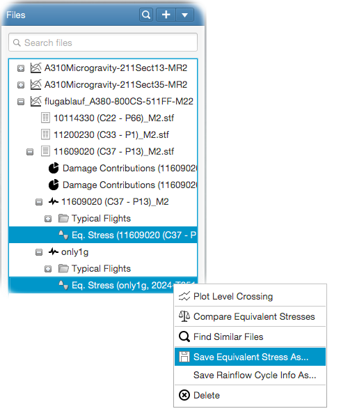

How to save equivalent stresses
The generated equivalent stresses can be saved to an Excel Worksheet in tabulated form. For this, select the equivalent stresses
you want to save from the file tree and right-click to open the popup menu. In the popup menu, select - Save Equivalent Stress As..
as shown in the following figure. This will open the options panel for saving the equivalent stresses.

Here, you can select all related information to be placed into the Excel Worksheet table.